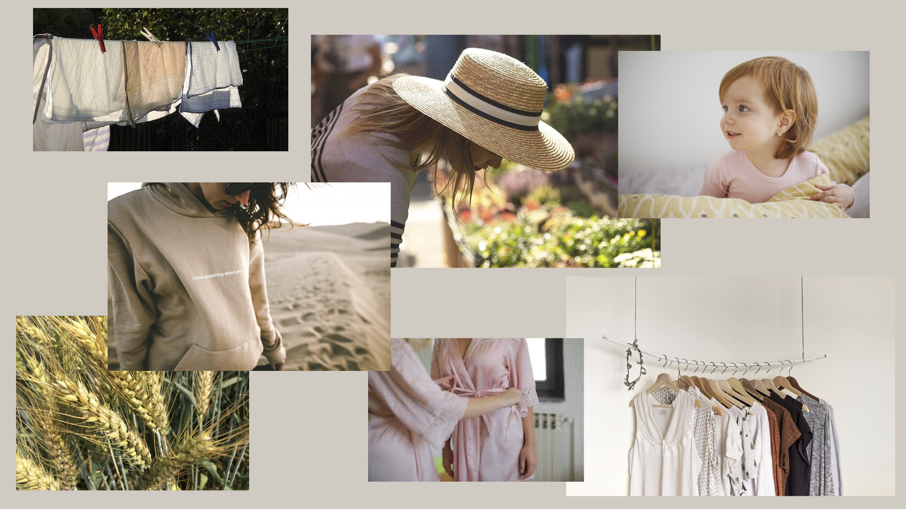
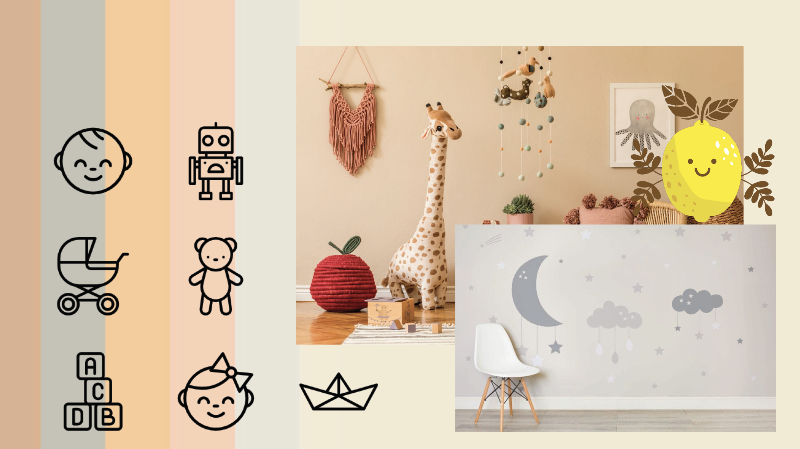
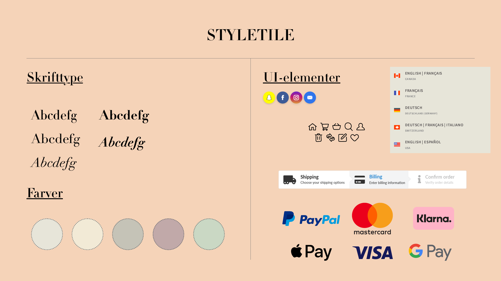
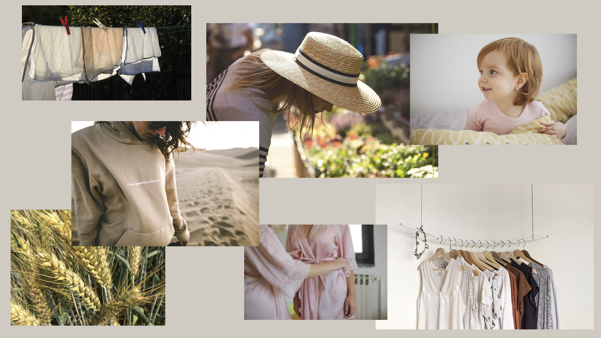
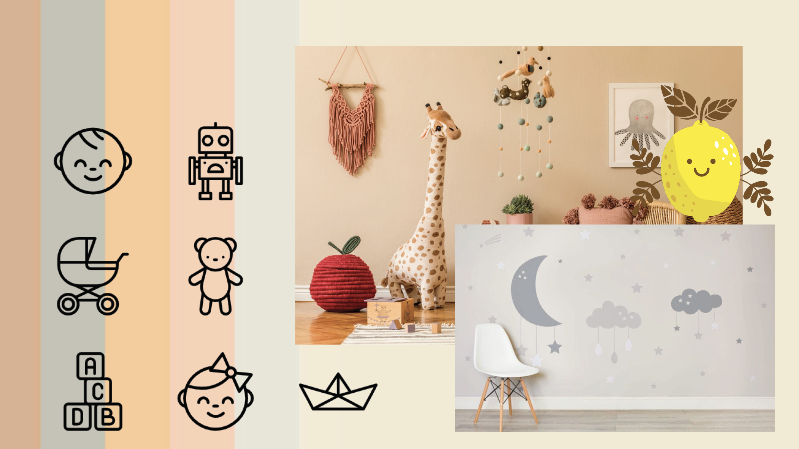
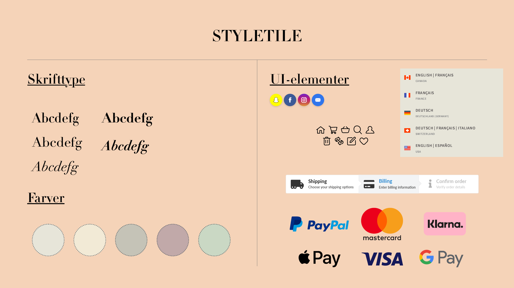

Tema- og opgavebeskrivelse
I temaet Grundlæggende UX fik vi værktøjer til at kunne lave research og få indsigt inden for områder bedst muligt. Her kom vi rundt om interview-, desk-, observations- og survey research, hvor der indhentes kvalitative og kvantitative data, omkring det emne der undersøges. Derudover fik vi flere færdigheder indenfor Adobe XD og lærte hvordan man lavede hifi- og lofi prototyper og design af UI-elementer. Vi fik introduktion til Design Sprint med fokus på sketching hvor vi arbejdede med The Four-Step Sketch. Temaopgaven gik på at vi skulle designe en webshop med salg af t-shirts og to valgfrie produkter. Dette skulle udarbejdes med den viden vi havde fået inden for research, idégenerering, prototyping, arbejde med photostil + Photoshop og tænke-højt-test (The five-act interview), som til sidst endte ud med det det endelige produkt og pitch af dette.
Refleksioner
Hvis jeg skulle lave noget i denne opgave om ville jeg have ændret mit koncept og søgt væk fra børnetøj. Hvis jeg havde valgt en målgruppe og et koncept der lå mere op af noget jeg selv kunne relatere til tror jeg at jeg ville have fået mere ud af hele processen. Både inden for viden omkring emnet, men også så jeg kunne bruge de produktbilleder jeg selv havde taget. Noget af den kritisk jeg fik da min prototype blev testet var nemlig at billederne ikke stemte overens med hvad der blev solgt (aldersmæssigt). Trods dette fik jeg så indsigter inden for et emne jeg ikke ellers bevæger mig inden for, og de teknikker og værktøjer vi fik under temaet har ikke været spildt.
Dokumentation
I dokumentationen for tema 3 - Grundlæggende UX har jeg udvalgt det indhold jeg synes har været mest relevant for udarbejdelsen af temaopgaven. Jeg har valgt de skitser som jeg lavede under The Four-Step Sketch, link med dokumentation for researchen, den fotostil som jeg gerne ville lægge mig op af, moodboard og styletile.


 





Temaoversigt
Næste tema